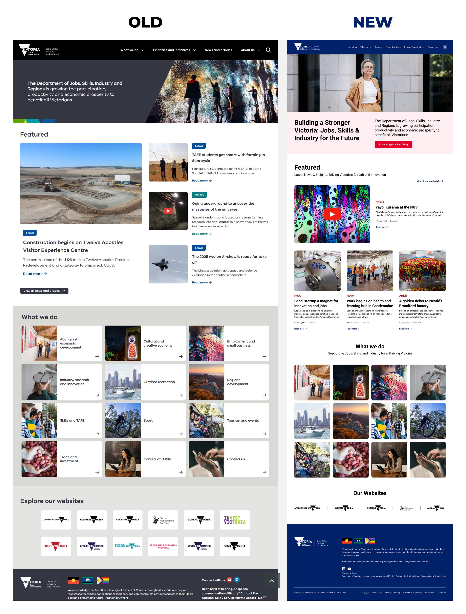

Digital experience Melbourne, Australia
Victoria Website
Building a stronger Victoria: a clearer digital experience for Jobs, Skills & Industry for the Future.
ProjectWebsite design
FocusWebsite design · UX/UI · Responsive design
ApproachResearch-led, accessible and mobile-first design
 Selected project visual
Selected project visual
INTERACTIVE PROTOTYPE
Explore the prototype.
Explore the interactive website flow in Figma. The prototype opens in a new tab.
UI/UX CASE STUDY
Case Study
Victoria — Building a Stronger Victoria: Jobs, Skills & Industry for the Future.
01 / THE CHALLENGE
Problem Statement
The previous DJSIR website suffered from a cluttered layout, inconsistent navigation, and poor accessibility, which created a fragmented and frustrating user experience. Users—ranging from job seekers and small business owners to internal government staff—struggled to locate relevant services and information efficiently. These usability issues led to high bounce rates, reduced engagement, and a diminished perception of trust and credibility.
Possible Solution
The redesigned DJSIR website introduces a clean, user-centered interface supported by streamlined navigation, an intuitive information hierarchy, and accessible design standards. By leveraging modular components, plain-language content, and mobile-first responsiveness, the new platform enhances service discoverability, improves user satisfaction, and ensures inclusivity for all Victorians accessing government services online.
02 / WHO IT SERVES
Target Audience
- Job Seekers
- Small to Medium Business Owners
- Industry and Innovation Professionals
- Creative Sector Workers
- Regional and Metropolitan Citizens
- Government Staff & Partners
03 / DESIGN APPROACH
The Approach
The redesign followed a user-centered, accessibility-first approach to create an intuitive and inclusive digital experience. Content was restructured for clarity, and a modular design system was developed for consistency and scalability. Collaboration across teams ensured iterative improvements based on user feedback and data.
MY ROLE
UX Strategy · User Research · Information Architecture · Interaction Design · Design Systems · UI Design · Prototyping · Wireframes · Accessibility Design · Responsive Design · User Testing · Cross-functional Collaboration
04 / CHALLENGES & LIMITATIONS
Website Design: Challenges & Limitations
UI/UX Challenges
- Legacy Content Overload — Migrating and reorganizing dense, inconsistent content from multiple departments was time-consuming and complex.
- Outdated & Inaccessible UI — The old design lacked visual hierarchy, used low-contrast elements, and failed to meet accessibility standards.
- Fragmented Navigation — Poorly grouped top-level menus and overwhelming homepage content created confusion and drop-offs.
- Maintaining Government Identity — Balancing a professional, authoritative look with a more modern, user-friendly aesthetic was a critical challenge.
- Cross-Department Consistency — Aligning over 10 linked sites under a unified design system required coordination across teams and platforms.
UI/UX Enhancements
- Modern Visual Design — Clean typography, ample white space, consistent colors, and human-focused imagery create a fresh, professional look.
- Improved Content Structure — Card-based layouts and clear visual hierarchy make content easy to scan and understand.
- Streamlined Navigation — Simplified top navigation with direct action labels enhances discoverability and user flow.
- Responsive & Accessible — Fully optimized for mobile with scalable sections, touch-friendly design, and improved accessibility compliance.
05 / BEFORE & AFTER
Key Redesign Features
| Feature | Old Design | New Design |
|---|---|---|
| Visual Design | Dull, corporate, low contrast | Bright, professional, friendly |
| Layout | Boxed, dense | Spacious, clean grid |
| Navigation | Overwhelming top nav | Streamlined, categorized search |
| Accessibility | Lacked contrast and sizing | WCAG-aligned, readable fonts |
| Mobile Experience | Minimal responsiveness | Fully responsive, mobile-first |
| Content Presentation | Text-heavy, static | Visual-driven, interactive cards |
06 / THE PROCESS
Design Thinking Process
The design thinking process began with empathizing with users through research and identifying key pain points. We then defined core problems, ideated solutions, prototyped key layouts, and tested with real users for feedback. This iterative approach ensured the final design was user-focused, accessible, and effective.
Survey Insight
Improvements
07 / USER PERSONAS
Define Phase
Anna
- Age
- 27
- Education
- Bachelor in Comm
- Status
- Single
- Occupation
- Job Seeker
- Location
- Melbourne
Personality
Determined · tech-savvy
Brief Story
Anna was recently laid off and is exploring job and training opportunities through government support. She often browses on her phone but finds the content overwhelming, with unclear eligibility details and poor navigation. She’s looking for a simple, supportive experience that helps her move forward confidently.
Goals
- Find relevant training programs or apprenticeships
- Secure stable employment in the marketing or public sector
Frustrations
- Job-related information is scattered across multiple pages
- Overwhelmed by jargon and lengthy descriptions
Needs
- A clear path to government-funded training
- Job listings that are filtered based on industry, location, and experience level.
- Clear eligibility criteria and application steps for training and employment programs.
- Mobile-optimized content, since she often browses job sites on her phone.
Motivations
- Wants to regain financial stability and build her career
- She wants to feel confident that she’s investing in navigating these services to real find opportunities.
- She’s driven by a desire to build a stable life that aligns with her skills.
Malcolm
- Age
- 43
- Education
- Business Admin
- Status
- Married
- Occupation
- Business Owner
- Location
- Bendigo
Personality
Practical · Self-reliant
Brief Story
Malcolm runs a café in regional Victoria and is seeking funding to upgrade his kitchen. He’s short on time and frustrated by confusing layouts, repeated information, and unclear grant application steps. He wants a quick, no-fuss way to explore support options and take action.
Goals
- Apply for government grants to upgrade kitchen equipment
- Understand business regulations and support initiatives
Frustrations
- Too much technical language; unsure where to start
- Confused by outdated links and duplicate content
Needs
- A clear and simple way to check eligibility for grants
- Step-by-step guides or FAQs for small business owners
- A mobile-accessible site with minimal clutter, so he can check details on the go.
- Trustworthy, up-to-date content that helps him make informed decisions without legal jargon.
Motivations
- Wants to grow his business while staying compliant with government rules
- He’s open to government support, but only if the process doesn’t slow him down or confuse him.
- He’s motivated to support his community, hire more locals, and stay ahead of compliance rules.
08 / UNDERSTANDING USERS
Empathy Map
Says
- “I just want clear, simple steps.”
- “This site is too confusing and time-consuming.”
Thinks
- “There must be an easier way to find what I need.”
- “Am I even eligible for this? I’m not sure.”
Does
- They scan pages quickly, click back and forth, or leave the site out of frustration.
- They rely on search engines or peers to find direct links instead of navigating manually.
Feels
- Frustrated, overwhelmed, and unsupported during an already stressful time.
- Hopeful but uncertain — they want to move forward, but feel stuck online.
09 / VISUAL SYSTEM
Typography & Colors
FONT USED / ROBOTORoboto
Roboto font is a elegant and modern sans serif font. It is very neat and clean. It have more readability and variety of options. That’s why I used this font.
ABCDEFGHIJKLMNOPQRSTUVWXYZ
abcdefghijklmnopqrstuvwxyz
1234567890
Roboto BoldRoboto MediumRoboto RegularRoboto Light
Primary Color#012169
Secondary Color#E4002B
Text Color#1E1E1E
Text Color#595959
BG Color#CBCBCB
10 / THE WEBSITE
Visual Design
Old and new landing pages, side by side.

Thank you for your time :)
Feel free to provide your valuable suggestion and comment.